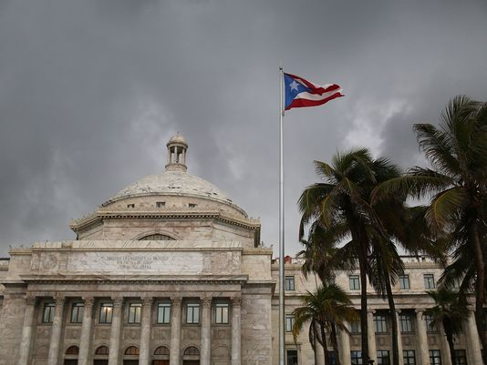

Politics
Before the 889 years, the Puerto Rico is a colony of the Spain. During the 1898, American-Spanish War break out. The result is that the Spain lose. After that, according to the Treaty of pairs, the region that is Puerto Rico has been ceded to the America. Since then, this region have relationship with the America.
Contemporary, Puerto Rico is one of the self-Governing Country of America. Officially, it still is one of the unincorporated territory of America. In some case, it possess some of Autonomy and privilege. For instance, Puerto Rican do not need to pay the tax, this also promote this region become paradise of the shopping. On the other aspect, United States Congress have rights to abolish the law pass by the Puerto Rican congress. And American army are still in charge of the home land frontier defense in Puerto Rican region. Thus, even though the Puerto Rican people have American nationality, they still have several disadvantage that the lack of some rights, such as they have been banned the right to vote for the president.The island elected Resident Commissioner of the United States Congress can only vote in the house of Representatives committee.
Key Question
After the Puerto Rico merge into the America, Puerto Rican political status are controversial. The main point is that should this region become American 51st state or just part of the territory. Therefore, Puerto Rican already have times referendum. Due to this question, the three main political party in Puerto Rico have different opinion. The people's democratic party propose to maintain the present situation.New Frontier Party suggest to become the American 51st state, The last party,Puerto Rican Independence Party advocate Puerto Rico become a socialist state country.
Politics: Puerto Rican
The government of Puerto Rico, based on the formal republican system, is separate int three branches: the executive, legislative and judicial department. The executive department is leaded by the government, legislative department is made up of Senate and House of Representatives, the judicial department is appointed by the head of Senate.
Political Position
The Governor of Puerto Rico is the head of government of the Commonwealth of Puerto Rico and also the executive branch of the government of Puerto Rico. He is also the commander-in-chief of the commonwealth's military forces, the Puerto Rico National Guard. The Governor and the representative is both elected by people, and four years for each term. The 78 cities of Puerto Rico will also elected their own mayor and city council.
The present Governor of Puerto Rico is Alejandro Javier García Padilla. he obtained his bachelor's degree in Political Science and Economics from the University of Puerto Rico. He used to be a member of the 24th Senate of Puerto Rico, and is elected as the Governor in January, 2013.